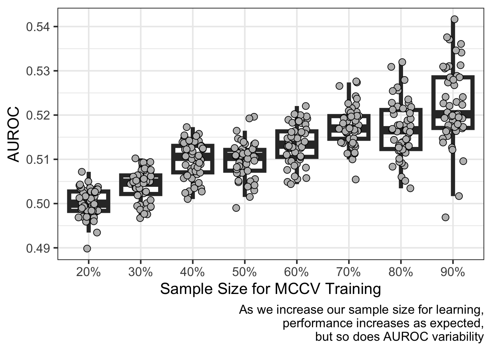
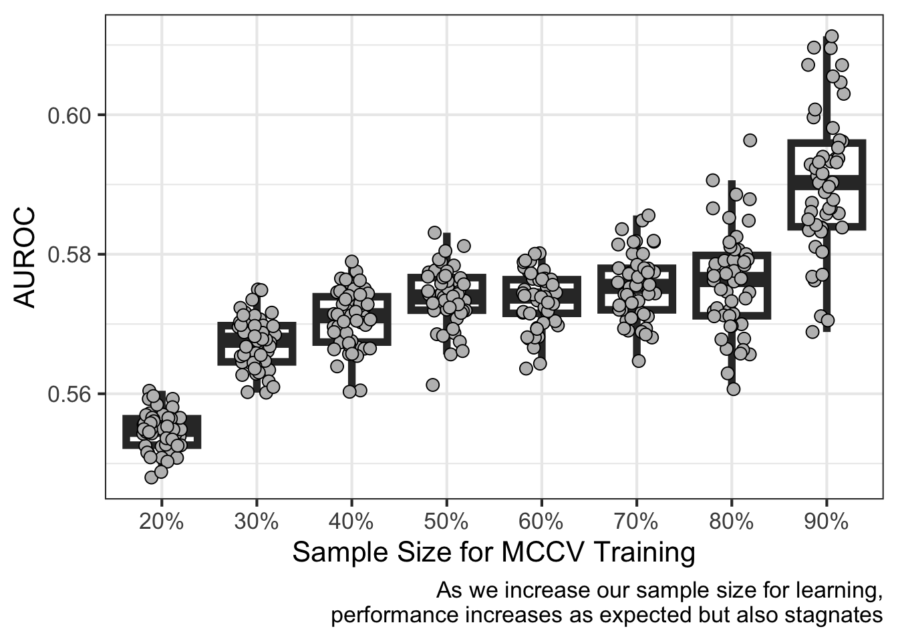

Often, a question of interest is at what sample size (used in training a model) can I detect an effect? Furthermore, is the effect I’m detecting a robust signal? MCCV can estimate the robustness of an effect or signal by learning from data at different sizes of a sample. For example, a large effect or performance, say 0.8 AUROC, may be reached using all data available in the sample. However, can I still reach 0.8 AUROC at a smaller sample size? Also, is the detected signal robust to the size of the sample used in training the model or does a particular cut of the data drive model learning? This article will show how learning from varying sample sizes may or may not show robust signal aka detection of an effect representative of the data generating process.
This first example defines two classes of data (class 1 and class 2) with a predictor drawn from very similar distributions. I expect robust signal (i.e. AUROC) to be detected as the proportion of samples increases:
Show The Code
import numpy as npN=100np.random.seed(0)Z1 = np.random.beta(2,3,size=N,)np.random.seed(0)Z2 = np.random.beta(2,2.5,size=N)Z = np.concatenate([Z1,Z2])import scipy as scY = np.concatenate([np.repeat(0,N),np.repeat(1,N)])import pandas as pddf = pd.DataFrame(data={'Y' : Y,'Z' : Z})df.index.name ='pt'
reticulate::py$perf_dfs %>%bind_rows() %>%ggplot(aes(factor(training_size),value)) +geom_boxplot(outlier.size =NA,alpha=0,linewidth=2) +geom_point(position =position_jitter(width = .2),pch=21,fill='gray',size=3) +scale_x_discrete(labels =function(x)paste0(as.double(x)*100,"%") ) +labs(x ="Sample Size for MCCV Training",y="AUROC",caption=paste0("As we increase our sample size for learning,\n","performance increases as expected,\n","but so does AUROC variability")) +theme_bw(base_size =16)

The second example, instead, defines two classes of data drawn from two different distributions. I would expect non-robust signal detected as the sample size for training is increased.
Show The Code
import numpy as npN=100np.random.seed(0)Z1 = np.random.beta(2,2.5,size=N)np.random.seed(0)Z2 = np.random.beta(6,5,size=N)Z = np.concatenate([Z1,Z2])import scipy as scY = np.concatenate([np.repeat(0,N),np.repeat(1,N)])import pandas as pddf = pd.DataFrame(data={'Y' : Y,'Z' : Z})df.index.name ='pt'
reticulate::py$perf_dfs %>%bind_rows() %>%ggplot(aes(factor(training_size),value)) +geom_boxplot(outlier.size =NA,alpha=0,linewidth=2) +geom_point(position =position_jitter(width = .2),pch=21,fill='gray',size=3) +scale_x_discrete(labels =function(x)paste0(as.double(x)*100,"%") ) +labs(x ="Sample Size for MCCV Training",y="AUROC",caption=paste0("As we increase our sample size for learning,\n","performance increases as expected but also stagnates")) +theme_bw(base_size =16)

In short, my thinking is the data generating process is captured in a sample only if a robust signal is found. A robust signal can be represented by a linear, average increase in AUROC performance as sample size using for training increases. Otherwise, the signal-to-noise ratio is lower than what would be needed to make generalizable predictions from the specified model and data. In this last example, the evidence is unclear as expected whether the two classes of data are generated by the same process. I say this for two reasons:
There is stagnant performance between using 30% and 80% of the sample size for training
There is a stark difference between using 20% and 90% of the sample size for training. I would expect there to be more overlap compared to complete non-overlap.